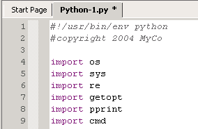
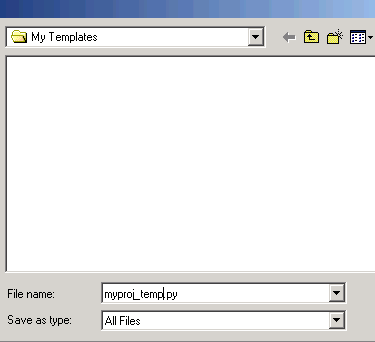
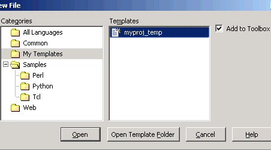
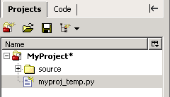

Create a file with the template contents.

Select File|Save as Template. Close the file
in the editor.

Select File|New|New File. Select the
template file and check Add to Toolbox.

Drag and drop the template file from the Toolbox to a
project.